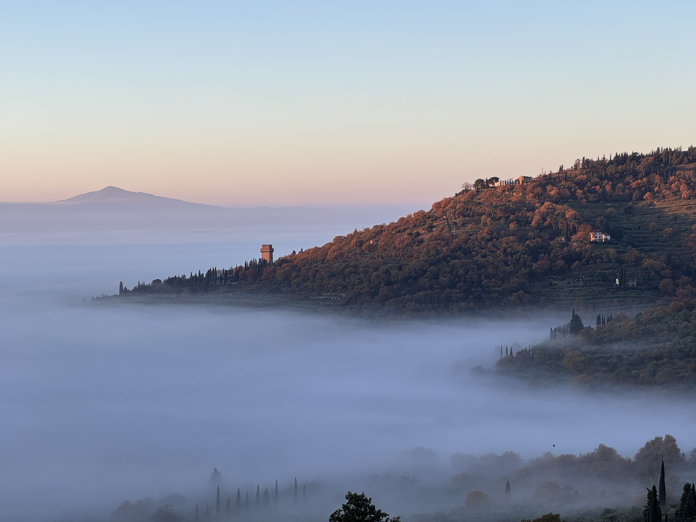

Ospitalità
La casa, le pause e il piacere di condividere la vita in campagna.
Scopri l’ospitalitàCortona · Toscana
Ospitalità, bicicletta e vita in campagna, tra ulivi, boschi e strade bianche.
Contattaci
La casa, le pause e il piacere di condividere la vita in campagna.
Scopri l’ospitalità
Cortona e la campagna toscana, da conoscere in bicicletta tra strade bianche, boschi e ulivi.
Esplora il territorio
Il lavoro tra gli ulivi, gli amici e i momenti a tavola: il racconto della raccolta 2026.
Leggi il racconto